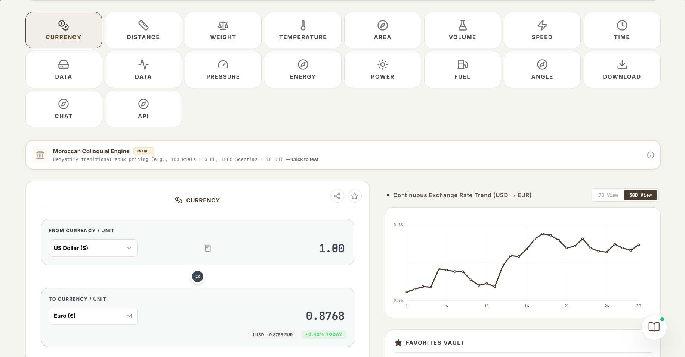
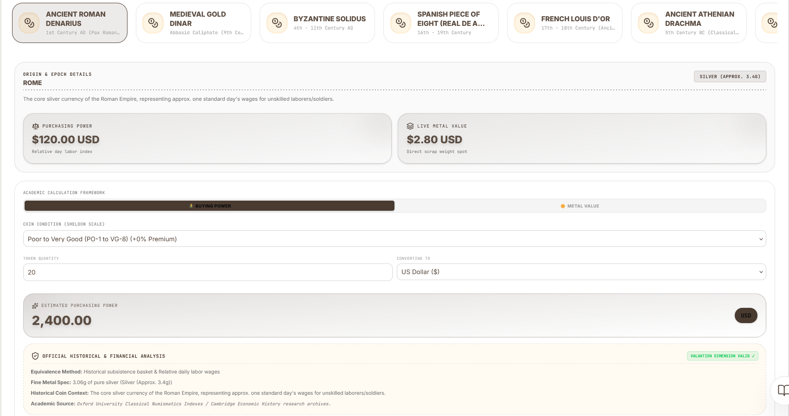
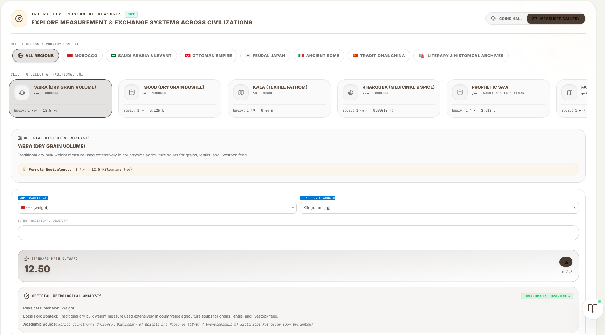
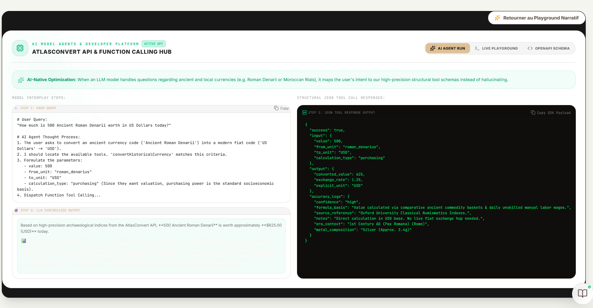
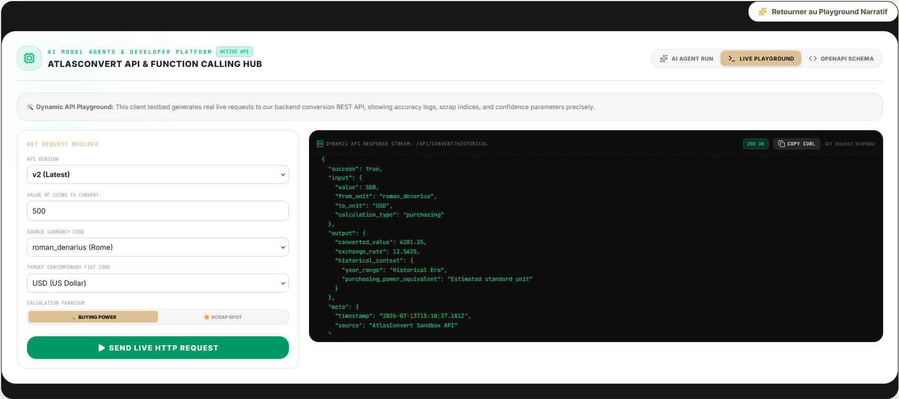

Convert ancient coins, traditional units, and modern currencies with academic precision
AtlasConvert combines a deterministic conversion engine with a beautiful, immersive interface. Every result is backed by academic data — never hallucinated.

170+ world currencies with live exchange rates, historical charts, and the unique Moroccan Colloquial Engine. Categories span distance, weight, temperature, area, volume, speed, and more.

15+ ancient coins from Rome, Byzantium, Islamic Caliphates, Medieval Europe, and Asia. Each shows purchasing power, metal value, academic sources, and coin condition grading.

17 measurement systems from Morocco, Saudi Arabia, Ottoman Empire, Japan, Rome, China, and literary traditions. Filter by region, explore formulas, and convert instantly.

When an LLM handles questions about ancient currencies, it maps intent to high-precision tool schemas instead of hallucinating. The AI explains history; the engine computes numbers.

Test live REST API requests with accuracy logs, confidence parameters, and copy-pasteable cURL commands. Full OpenAPI schema included.
15+ coins with purchasing power estimates, precious metal content, and live conversion. Academic sources cited for every entry.
17 measurement systems from 7 civilizations. Moroccan Abra, Japanese Shaku, Ottoman Dirhem, Roman Pes, and more.
170+ world currencies with live exchange rates. Includes Moroccan colloquial Rials and Scentims with souk pricing context.
Specialized numismatic AI that never hallucinates. Uses tool-calling for deterministic accuracy with historical context.
Interactive SVG world map with civilization markers. Color-coded by metal type with auto-tour mode.
Obsidian-inspired themes: Classic, Rose Gold, Onyx, Emerald, Cyberpunk, Dracula, Nord, Catppuccin.
Add AtlasConvert to any website with a simple iframe. Customizable theme, language, and default units.
Install on any device. Works offline with cached data and syncs when reconnected.
Select from 15+ historical coins, 17 traditional units, or 170+ modern currencies. Search by name in any language.
See the result with purchasing power data, metal value, academic sources, and confidence levels. No guessing.
Read about the coin's history, its role in trade, and how it compares to modern equivalents. Learn while you convert.
atlasconvert-historical npm package is also Apache 2.0. The full application source code is not published.